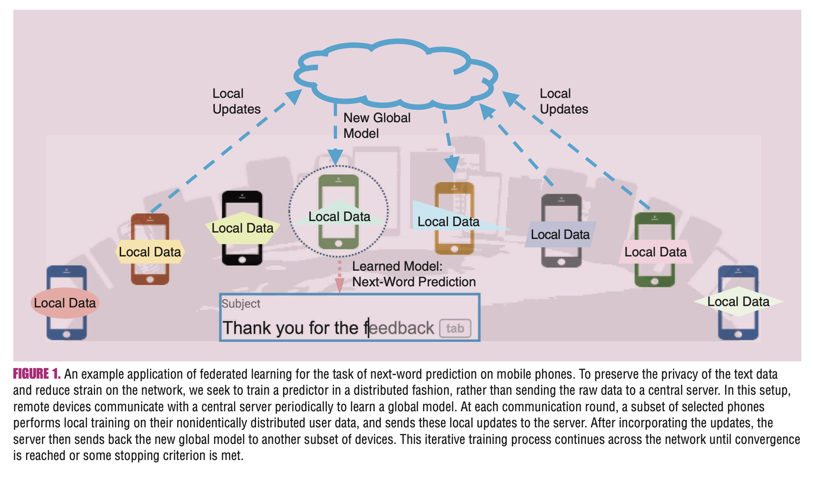

An Analysis of [Communication-Efficient Learning of Deep Networks from Decentralized Data]
Federated learning has gained widespread use in healthcare sectors where data sharing is often challenging due to concerns over user privacy and data ownership. Without adequate techniques to utilize these "isolated" data, we typically encounter data silos. Hospitals are eager to leverage their data but lack the knowledge to do so effectively. Introduced by Google in 2016, federated learning was designed to tackle this issue by adhering to the core principle that only model gradients or weights, not raw data, are exchanged among servers.
Yet, in recent years, we haven’t seen this technology adopted on a large scale, despite increasing societal concern for data privacy from both regulatory agencies and the public. One possible reason is that tech companies may lack the incentive to allow users to keep their data on local devices, as this data is a lucrative resource for them. However, we are interested in investigating, from a technical standpoint, what factors are impeding the broader adoption of this technology.
The paper "Communication-Efficient Learning of Deep Networks from Decentralized Data" is seminal in introducing federated learning. It outlines the fundamental architecture of an FL system and an aggregation algorithm for updating the model on a central server. Although this work primarily focuses on optimization properties within an FL setting and offers limited discussion on practical issues that might arise in real-world applications, we believe it provides an excellent foundation for understanding the technology and setting the stage for future research or practical applications. By the end of this project, we aim to implement this technique hands-on and uncover insights into potential solutions for several practical challenges.
Literature Review; Biography; Social Impact; Industry Applications; Follow-on Research; and Peer-Review
1. Literature Review
The concept of federated learning introduced in this paper builds upon various prior works in distributed computing, privacy-preserving data analysis, and machine learning. Before this paper, most machine learning models relied on centralized data collection, which raised concerns about data privacy and efficiency. The paper references earlier works on parallelized learning and data decentralization but takes a novel approach by focusing on communication efficiency and privacy.
The FedAvg Algorithm - Overview
The FedAvg algorithm is designed to efficiently train a global model in a federated setting. The key steps are as follows:
- Initialization: A global model is initialized on a central server.
- Local Training: This global model is sent to a subset of participating devices (clients). Each client trains the model on their local data.
- Model Updating: After local training, each client sends their model updates (i.e., the weights of the trained model) back to the server. Notably, the actual data remains on the client, ensuring privacy.
- Aggregation: The server aggregates these updates, typically by averaging the weights, to update the global model.
- Iteration: Steps 2-4 are repeated for several rounds until the model converges or meets certain performance criteria.
2. Biograpphy
-
Brendan McMahan
- Research Field: Brendan McMahan's research primarily focuses on machine learning, with a specific interest in federated learning, privacy-preserving AI, and distributed algorithms.
- Experience: McMahan is known for his work at Google, where he has been a key figure in the development of federated learning technologies. His contributions have been instrumental in advancing machine learning techniques that are both privacy-conscious and efficient for use on decentralized data.

-
Eider Moore
- Research Field: Eider Moore's research interests are less publicly documented, but their contribution to this paper suggests a focus on distributed machine learning and privacy-preserving technologies.
-
Daniel Ramage
- Research Field: Daniel Ramage specializes in natural language processing (NLP) and machine learning, with a particular interest in applying these technologies in practical, user-centered contexts.
- Experience: Ramage has a strong background in both academia and industry. He has worked on various NLP and machine learning projects, contributing to the development of technologies that bridge the gap between theoretical research and real-world applications.
-
Seth Hampson
- Research Field: Seth Hampson's specific research interests are not widely publicized. However, his involvement in this paper indicates a focus on distributed systems and machine learning.
-
Blaise Agüera y Arcas
- Research Field: Blaise Agüera y Arcas works primarily in machine learning, with a strong interest in neural networks, computational neuroscience, and human-computer interaction.
- Experience: Agüera y Arcas is known for his work at Google, particularly in AI and machine learning. He has played a significant role in developing innovative technologies and has been a prominent speaker on topics related to AI and the intersection of technology and society.
3. Social Impact
The social implications of this research are significant

- Privacy Preservation: By enabling machine learning models to be trained on-device without the need to share personal data, this approach addresses major privacy concerns.
- Accessibility and Equity: Federated learning allows for model training on a wide variety of devices, including those with limited computational resources, promoting more equitable access to AI technology.
- Data Security: Reducing the need to centralize data for training models lowers the risk of data breaches.
4. Industry Applications
Federated learning is particularly relevant in scenarios where individual entities must train models on datasets larger than their own but are unable to share the raw data due to legal, strategic, or economic considerations. The success of this technology hinges on robust connections between local servers and the minimal computational power required for each node.
In the realm of transportation, self-driving cars leverage various machine learning technologies such as computer vision for obstacle analysis and machine learning for adapting to environmental factors, like the condition of the road. The traditional cloud-based approach for managing a potentially large fleet of self-driving cars poses safety risks due to the need for rapid real-world responses. Federated learning emerges as a solution by reducing data transfer volumes and expediting the learning processes.
Within the context of industry and smart manufacturing, machine learning techniques are widely adopted to enhance industrial processes' efficiency and effectiveness while maintaining a high level of safety. Despite these advancements, the privacy of sensitive data remains a paramount concern for industries. Federated learning algorithms offer a viable solution by addressing these issues without compromising sensitive information. Additionally, federated learning finds applications in PM2.5 prediction, supporting smart city sensing applications.
Regarding medicine and digital health, federated learning tackles challenges related to data governance and privacy by facilitating collaborative algorithm training without the need for direct data exchange. The conventional approach of centralizing data from various medical institutions raises critical concerns about patient privacy and data protection. Federated learning enables the training of machine learning models at scale, across multiple medical institutions while preserving data integrity. Notably, recent research validates the effectiveness of federated learning in predicting clinical outcomes for patients with COVID-19, demonstrating accuracy and generalizability in a global context. A systematic review of federated learning in healthcare outlines challenges specific to medical data, emphasizing the need for careful consideration.
A collaborative effort between industry and academia has yielded MedPerf, an open-source platform designed to validate medical AI models using real-world data. It relies on federated evaluation of AI models to address patient privacy concerns and utilizes diverse benchmark committees to define specifications for neutral, clinically impactful benchmarks.
In the field of robotics, which spans a spectrum from simple, repetitive tasks to complex, unpredictable activities, machine learning is indispensable. Federated learning stands out as a solution to enhance conventional machine learning training methods. Research papers showcase the application of federated learning in diverse robotic scenarios, including navigation over various environments, multi-robot navigation under limited communication bandwidth, and vision-based navigation, all contributing to improved sim-to-real transfer.
5. Follow-on Research
In the paper "Communication-Efficient Learning of Deep Networks from Decentralized Data," several potential issues are identified that can hinder the effective implementation of federated learning:
- Non-IID Data Distribution: Data in federated learning is typically not identically and independently distributed (non-IID) across the network. This variability can negatively impact the learning process and the performance of the global model.
- Unbalanced Data: The amount of data across devices can be highly unbalanced, leading to skewed model updates and potentially reducing the overall effectiveness of the model.
- Limited Communication Bandwidth: Federated learning is challenged by limited bandwidth for communication between the devices and the central server, which can hinder the process, especially when dealing with large models or many devices.
- Devices Heterogeneity: There is significant heterogeneity in the computational capabilities, storage, and network connectivity of the devices in federated learning, causing challenges in synchronizing and executing the learning process efficiently.
6. Peer-Review
The paper "Communication-Efficient Learning of Deep Networks from Decentralized Data" is a seminal work in the field of federated learning. It outlines the fundamental architecture of an FL system and an aggregation algorithm for updating the model on a central server. Although this work primarily focuses on optimization properties within an FL setting and offers limited discussion on practical issues that might arise in real-world applications, we believe it provides an excellent foundation for understanding the technology and setting the stage for future research or practical applications.
7. Code Implementation

Explore our Federated Learning Colab Notebook
Conclusion
The FedAvg algorithm is a cornerstone in federated learning, addressing both the efficiency of model training in decentralized environments and the privacy concerns associated with data sharing. Its design and implementation have opened up new possibilities in the application of machine learning models, especially in scenarios where data privacy and communication efficiency are paramount.
References
[ii] https://dl.acm.org/doi/10.1145/3414045.3415949.
[iii] https://www.mdpi.com/1424-8220/21/13/4586.
[iv] https://doi.org/10.1038/s41591-021-01506-3.
[v] https://www.mdpi.com/2076-3417/11/23/11191.
[vi] https://mlcommons.org/2023/07/announcing-medperf-open-benchmarking-platform-for-medical-ai/.
[vii] https://arxiv.org/abs/1901.06455.
[viii] https://arxiv.org/abs/2202.01141.
Team Members
Gabriel Cuchacovich
Zhongwei Zhang